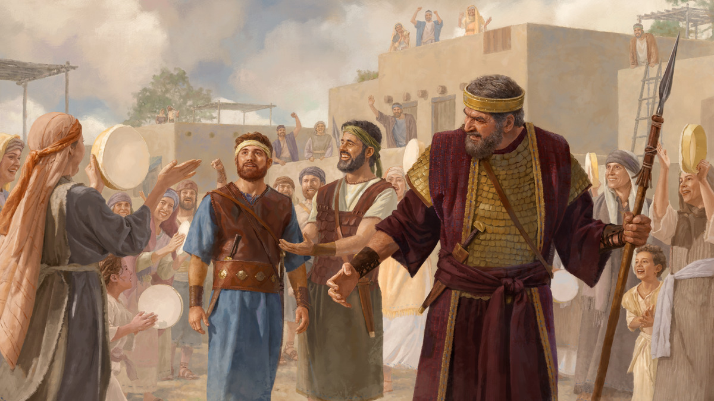

Artigo de estudo · Semana de 12 a 18 de outubro de 2026
Você pode vencer a luta contra Satanás e os demônios
Texto base: “Temos uma luta, não contra sangue e carne, mas contra . . . as forças espirituais malignas nos lugares celestiais.” (Efésios 6:12)
Cânticos: 129, “Eu vou perseverar” (abertura) e 149, “Um cântico de vitória” (encerramento)
Objetivo do artigo: ver o que podemos fazer para não deixar que o Diabo destrua a nossa união ou nos desanime com a oposição.
Cada parágrafo traz o conteúdo resumido, com as frases citadas do artigo, os textos bíblicos escritos e um comentário pronto. O texto oficial completo está no jw.org e no JW Library: cada parágrafo tem um link direto.
1. Contra quem todos nós temos que lutar? (Efésios 6:11, 12)
Como servos de Jeová, não participamos das guerras do mundo. Mas a Bíblia diz que estamos em uma luta contra espíritos malignos. Para vencer, o mais importante é confiar na ajuda de Jeová, e também saber quais táticas Satanás e os demônios usam contra nós e nossa família espiritual.
Meu comentário comentário base
Se alguém já comentou isso · Guia de Pesquisa Etapa 1
- Outro ângulo: se a luta não é contra pessoas, nem o parente que se opõe nem o colega que zomba é o nosso inimigo de verdade.
- Guia de Pesquisa para Efésios 6:11: “Oponha-se ao Diabo e às suas artimanhas” (livro Continue a Amar a Deus, cap. 16) e “Jovens, fiquem firmes contra o Diabo” (w18.05 p. 27-31).
2. O que vamos ver neste estudo?
O estudo anterior mostrou como o Diabo tenta enfraquecer a nossa confiança em Jeová e em Jesus. Este mostra outras duas táticas: ele tenta destruir a união com os irmãos, e usa a oposição para nos distrair ou assustar, para pararmos o trabalho que Jeová nos deu.
Meu comentário comentário base
3. De que maneira Satanás tenta causar divisão entre nós?
Satanás quer que lutemos uns contra os outros em vez de lutar contra ele. No mundo dele, muitos são cruéis, sem amor e desconfiados. Ele quer que sejamos influenciados por essas pessoas e passemos a criticar os irmãos, desconfiar deles e até odiá-los.
Meu comentário comentário base
Se alguém já comentou isso · Guia de Pesquisa Etapa 2
- Uma comparação: um exército que briga entre si não precisa de inimigo para perder a guerra.
4. Por que Saul passou a odiar Davi? (Veja também a imagem.)
No começo, Saul amava Davi e ficou impressionado com ele como guerreiro. Mas, com o tempo, Saul ficou com muito ciúme, porque o povo gostava mais de Davi, e tentou matá-lo várias vezes. Satanás queria isso, porque Davi já tinha sido ungido para ser o próximo rei.

Meu comentário comentário base
Se alguém já comentou isso · Guia de Pesquisa Etapa 2
- Repare como começou: com uma música e uma comparação. O ciúme quase sempre começa pequeno.
- Guia de Pesquisa para 1 Samuel 18:9: “Uma grande amizade”, série Imite a Sua Fé (ijwia artigo 3 § 10).
5. Por que o Diabo quer que tenhamos ciúme dos nossos irmãos? (Tiago 3:14-16)
Satanás sabe que, quando continuamos unidos, Jeová nos ajuda e abençoa. Então ele tenta destruir a união. Ele quer que tenhamos ciúme dos irmãos, porque quando sentimos ciúme de alguém, é muito difícil mostrar amor. E se deixássemos de mostrar amor por um irmão, Jeová aceitaria a nossa adoração?
Meu comentário comentário base
Se alguém já comentou isso · Guia de Pesquisa Etapa 2
- Situações do dia a dia: quando outro recebe a designação que a gente esperava, ou quando o comentário de alguém é muito elogiado.
- O Salmo 133:1 mostra o outro lado: como é bom e agradável irmãos viverem juntos em união. É essa bênção que Satanás quer tirar.
6. O que você aprendeu do exemplo de Jonatã? (Veja também a imagem.)
Quem ama os irmãos não tem ciúme deles. Jonatã se tornou amigo de Davi e garantiu a ele: “Você será o rei de Israel.” Ele foi humilde, percebeu qual era a vontade de Jeová e apoiou Davi como o próximo rei.
Meu comentário comentário base
Se alguém já comentou isso · Guia de Pesquisa Etapa 2
- Detalhe do versículo 16: Jonatã não fortaleceu Davi nele mesmo, mas em Jeová.
- Guia de Pesquisa: “Uma grande amizade” (ijwia artigo 3 §§ 19-21) e “Felizes são os humildes” (w93 1/12 p. 24 § 19).
7. O que podemos fazer para não deixar Satanás destruir nossa união? (Efésios 4:25-27)
Satanás usa também as nossas diferenças de opinião, personalidade e cultura. O que fazer? Se tiver um problema com um irmão, resolva logo essa situação. Aumente o amor pelos irmãos, porque eles são valiosos para Jeová, e precisamos uns dos outros, assim como todas as partes do corpo são importantes.
Meu comentário comentário base
Se alguém já comentou isso · Guia de Pesquisa Etapa 2
- Guia de Pesquisa para Efésios 4:26: o Perspicaz (“Ira”) explica que a ira às vezes acontece, mas nutrir a ira dá oportunidade para o Diabo se aproveitar. Entre irmãos, a pessoa deve dar os passos para fazer as pazes.
- 1 Pedro 5:9: a inteira fraternidade no mundo passa pelos mesmos sofrimentos. Não estamos sozinhos.
8. O que podemos fazer quando um irmão ou uma irmã nos magoa?
Lembre-se de que eles também são imperfeitos, e que é normal surgirem irritações entre pessoas imperfeitas. Siga o conselho de suportar e perdoar uns aos outros liberalmente. Assim você coopera com Jeová e Jesus, que querem a nossa família espiritual unida.
Meu comentário comentário base
Se alguém já comentou isso · Guia de Pesquisa Etapa 2
- Do Guia de Pesquisa, na mesma edição: “Um pedido feito com base no amor” (w26.08 p. 18-19). Quando uma planta está sem flor, a gente continua cuidando porque lembra como ela fica bonita florida. Lembrar das qualidades do irmão ajuda a perdoar.
- João 17:21: Jesus orou para que todos fossem um. Perdoar é cooperar com essa oração.
9. Qual é outra tática que Satanás usa contra nós?
Outra tática é a perseguição, e todos os cristãos verdadeiros seriam perseguidos. Como ela é injusta, poderíamos gastar tempo e energia para corrigir a situação, conseguir justiça ou nos vingar, e assim deixar de lado o trabalho mais importante: pregar as boas novas.
Meu comentário comentário base
Se alguém já comentou isso · Guia de Pesquisa Etapa 3
- Outro ângulo: Satanás ganha não só quando alguém deixa a verdade, mas também quando a gente se distrai e prega menos.
- Romanos 12:21: “Não se deixe vencer pelo mal, mas continue vencendo o mal com o bem.”
10. O que Isaque fez ao enfrentar injustiças?
Pense no exemplo de Isaque. Os filisteus tiveram inveja e taparam os poços de Abraão. Isaque cavou outros, e disseram que a água também era deles. Para manter a paz, ele se mudou de novo, e Jeová o abençoou. Devemos também reagir com paciência e manter a paz.
Meu comentário comentário base
Se alguém já comentou isso · Guia de Pesquisa Etapa 3
- Os nomes dos poços contam a história: Eseque, “porque haviam discutido”; depois Sitna; e por fim Reobote, que o Perspicaz explica como “Lugares Amplos”: “agora Jeová nos deu amplo espaço”.
- Quem já tem idade pode lembrar de uma injustiça que deixou nas mãos de Jeová, e de como ele cuidou depois.
11. Como Jesus reagiu ao enfrentar desafios?
Jesus enfrentou muito: alguns dos seus parentes achavam que ele tinha perdido o juízo, os líderes religiosos questionavam a autoridade dele, foi traído por um amigo e condenado à morte. Mesmo assim, se concentrou no serviço que Jeová lhe deu e nunca se vingou: quando Pedro cortou a orelha do escravo, Jesus curou a orelha do homem.
Meu comentário comentário base
Se alguém já comentou isso · Guia de Pesquisa Etapa 3
- Do Guia de Pesquisa para Marcos 3:21: a Sentinela de fevereiro de 2026 explica que Jesus estava tão ocupado pregando que não tinha tempo nem de comer, e os parentes talvez o achassem fanático. Pelo menos dois irmãos de Jesus, Tiago e Judas, se tornaram cristãos depois.
- Aplicação: quando a família acha que exageramos com a religião, a melhor resposta é mostrar por ações que somos equilibrados.
12. De acordo com Mateus 5:43, 44, como devemos tratar as pessoas que se opõem a nós ou nos perseguem?
Satanás tenta nos fazer parar de pregar, e parentes e outras pessoas podem se opor ou perseguir. Mas Jesus disse que devemos amar até mesmo as pessoas que nos perseguem: não odiar, não tratar mal, e sim tratar todos com bondade, paciência e respeito.
Meu comentário comentário base
Se alguém já comentou isso · Guia de Pesquisa Etapa 3
- Do Guia de Pesquisa: a Sentinela de novembro de 2024 (“Como lidar com injustiças?”) diz que orar por quem nos maltrata diminui o ressentimento e a raiva. Um irmão contou: “Eu orei várias vezes pelo irmão que tinha me ofendido. Jeová me ajudou a perdoar.”
- Na estaca, Jesus orou: “Pai, perdoa-lhes, pois não sabem o que estão fazendo.” (Luc. 23:34)
13. Por que devemos respeitar os governos mesmo quando eles se opõem a nós? (Veja também a imagem.)
Porque Jeová nos pede para fazer isso. Satanás talvez não esteja por trás de toda decisão injusta, mas gostaria que criticássemos os governos ou ficássemos contra eles. As pessoas do mundo fazem protestos, mas um cristão nunca faria isso! Se deixássemos de ser neutros, Satanás ficaria muito feliz.
Meu comentário comentário base
Se alguém já comentou isso · Guia de Pesquisa Etapa 3
- Do Guia de Pesquisa para Romanos 13:1 (w23.10 p. 8-10): na Nigéria, um oficial tirou os soldados de um Salão do Reino dizendo: “As Testemunhas de Jeová não participam de protestos; elas sempre pagam os impostos.”
- A mesma Sentinela conta de uma irmã que parou de ler postagens contra as autoridades nas redes sociais, orou e leu sobre neutralidade. Hoje se sente mais calma e em paz.
14. Do que devemos nos lembrar sobre as pessoas que hoje se opõem ao povo de Deus?
Algumas pessoas que antes eram opositoras se tornaram Testemunhas zelosas. Ore pelas autoridades e pelos parentes e colegas que se opõem, e seja paciente. Uma irmã que por anos foi contra o marido ser Testemunha diz: “O segredo é ter paciência, paciência e mais paciência.”
Meu comentário comentário base
Se alguém já comentou isso · Guia de Pesquisa Etapa 3
- 1 Timóteo 2:2 dá o motivo de orar pelas autoridades: para continuarmos a levar uma vida calma e sossegada, com devoção a Deus.
- Quem tem um parente opositor há décadas pode contar, em uma frase, como a paciência ajudou.
15. Por que não seria realista tentar acabar com as injustiças que existem hoje?
Tentar resolver as injustiças que existem hoje só vai nos deixar sem tempo e energia. Jeová sabe o que estamos enfrentando, e em breve o Reino vai desfazer todo o sofrimento causado por Satanás. Enquanto isso, sejamos pacientes, mostremos amor e ajudemos o maior número de pessoas a se tornar amigas de Jeová.
Meu comentário comentário base
Se alguém já comentou isso · Guia de Pesquisa Etapa 3
- Salmo 37:18: “Jeová sabe o que os íntegros passam.” Ele não está alheio ao que sofremos.
- 1 João 3:8: Jesus veio para “desfazer as obras do Diabo”. É o trabalho dele, e ele vai fazer.
16. O que vai nos ajudar a vencer a nossa luta contra espíritos malignos? (Veja também as imagens.)
A Bíblia garante que podemos vencer, e diz que o segredo para isso é a fé. Fortaleça sua fé em Jeová e em Jesus. Essa fé vai motivar você a amar os irmãos e a continuar unido com eles.
Meu comentário comentário base
Se alguém já comentou isso · Guia de Pesquisa Etapa 4
- Guia de Pesquisa para Efésios 6:16: “Você está cuidando do seu ‘grande escudo da fé’?” (w19.11 p. 14-19).
- 1 João 5:4: “esta é a vitória que venceu o mundo: a nossa fé.”
17. O que devemos estar determinados a fazer?
Não deixar o Diabo acabar com a nossa união nem nos desanimar. Jeová e Jesus prometeram que vão continuar do nosso lado, e os irmãos lutam junto. E vamos seguir o conselho de Jesus de ser bondosos com quem se opõe a nós.
Meu comentário comentário base
Se alguém já comentou isso · Guia de Pesquisa Etapa 4
- Para fechar: estamos cercados de aliados. Jeová e Jesus de um lado, e os irmãos do outro.
Como responderia?
Como Satanás tenta destruir a união que temos com nossos irmãos?
Meu comentário comentário base
Como Satanás tenta nos desanimar para deixarmos de lado nosso trabalho de pregação?
Meu comentário comentário base
Por que você tem certeza de que pode vencer a luta contra as forças espirituais malignas?
Meu comentário comentário base
Roteiro de 60 minutos
Estudo de A Sentinela, 17 parágrafos. Os tempos são referência.
Cântico 129 e oração
“Eu vou perseverar”.
Texto base e objetivo
Leia Efésios 6:12. Lembre que é a continuação do estudo da semana passada.
§§1 e 2, a guerra
Leia Efésios 6:11, 12. A luta não é contra pessoas.
§§3 a 8, a união
Saul e Jonatã com a primeira imagem. Leia Tiago 3:14-16 e Efésios 4:25-27. É o bloco mais longo.
§§9 a 15, a oposição
Isaque e os poços, Jesus curando a orelha. Leia Mateus 5:43, 44. No §13, a imagem do protesto.
§§16 e 17, como vencer
A fé como escudo e a terceira imagem: irmãos diferentes, unidos.
Como responderia?
Uma resposta curta para cada pergunta de revisão.
Encerramento e cântico 149
“Um cântico de vitória”.
Se o tempo apertar
Pode encurtar: §2 e §15.
Não pode faltar: Jonatã sem ciúme (§6), resolver logo os desentendimentos (§7), Isaque e a paz (§10) e a neutralidade (§13).
Resumo: os pontos altos deste estudo
O caminho que percorremos
- Uma guerra de outro tipo. Contra espíritos, não contra pessoas. §1, §2
- Satanás quer nos dividir. Ciúme, diferenças e mágoas. §3 a §8
- Satanás quer nos distrair. Perseguição e injustiça. §9 a §15
- Como vencer. A fé, unidos e bondosos. §16, §17
Os sete pontos altos
- A luta não é contra sangue e carne: o opositor não é o inimigo de verdade.
- O ciúme de Saul começou com uma música e uma comparação.
- Jonatã, o herdeiro do trono, ajudou Davi a encontrar forças em Jeová.
- Não deixem o sol se pôr irados: não deem chance ao Diabo.
- Isaque mudou de poço até achar Reobote, “Lugares Amplos”.
- Jesus curou a orelha de quem vinha prendê-lo.
- “Paciência, paciência e mais paciência” com quem se opõe.
Três frases para o encerramento
- “Satanás quer que a gente lute uns contra os outros. Nós lutamos contra ele, juntos.”
- “Quem tem a fé como escudo não precisa de vingança.”
- “O opositor de hoje pode ser o irmão de amanhã.”
Suas respostas
Cada campo já vem com um comentário pronto. O que você ajustar fica salvo automaticamente neste navegador, neste aparelho. Para levar para outro aparelho, baixe o arquivo aqui e carregue no outro lado.
O arquivo é um .json com os seus comentários e as anotações marcadas como vistas.
Preparação baseada no artigo de estudo “Você pode vencer a luta contra Satanás e os demônios”, A Sentinela, edição de estudo de agosto de 2026, para a semana de 12 a 18 de outubro de 2026. Complementos do Guia de Pesquisa: A Sentinela de agosto de 2026, fevereiro de 2026, novembro de 2024, outubro de 2023 e 1/11/2006; Estudo Perspicaz, verbetes “Ira” e “Reobote”. Bíblia: Tradução do Novo Mundo (edição de estudo), extraída do JW Library.
Os resumos, os comentários base, as anotações e o roteiro são notas de preparação pessoal, não material publicado pelas Testemunhas de Jeová. O artigo, as imagens e o texto da Bíblia são propriedade da Watch Tower Bible and Tract Society.